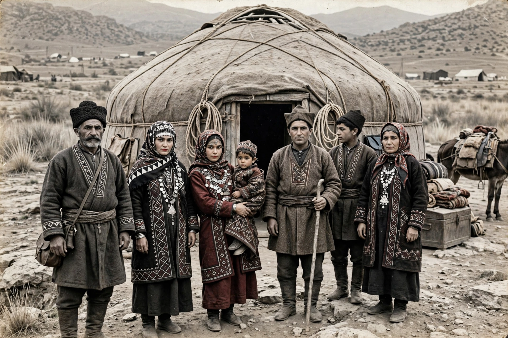

Afshar (tribe)
From Wikipedia, the free encyclopedia
| Afshar | |
|---|---|
| Ethnicity | Oghuz Turkic |
| Language | Afshar dialect of Azerbaijani / Turkish |
| Religion | Islam (predominantly Shia) |
| Regions | Iran, Azerbaijan, Turkey, Afghanistan |
The Afshar (Azerbaijani: Əfşar, Turkish: Afşar, Persian: افشار) are one of the twenty-four original Oghuz Turkic tribes listed in the traditions of Oghuz Khagan. Historically a nomadic tribe, the Afshar migrated across Central Asia, Anatolia, the Caucasus and the Iranian plateau over many centuries.
History
The Afshar trace their ancestry to the Oghuz tribes of Central Asia. They were among the Turkic groups that moved westward into Anatolia and Persia during the Seljuk era. Branches of the tribe settled in what is now eastern Turkey, northwestern Iran and the South Caucasus.

An Afshar community in Iran, early 20th centuryNader Shah
The Afshar tribe rose to prominence under Nader Shah (1688–1747), founder of the Afsharid dynasty, who was born into the Qereqlu clan of the Afshar in Khorasan. Nader's military genius created a vast empire stretching from the Caucasus to India in the 1730s and 1740s.
Modern distribution
Today Afshar communities are found chiefly in Iran (notably in Kerman, Khorasan, East Azerbaijan and Hamadan provinces), Azerbaijan, Turkey, Afghanistan and Syria. Many have become sedentary, though nomadic pastoralism persists in some regions.
Culture
The Afshar are renowned for their carpet weaving; Afshar rugs are prized tribal weavings with distinctive geometric designs, typically woven in wool on a wool foundation. They speak dialects closely related to Azerbaijani Turkish.